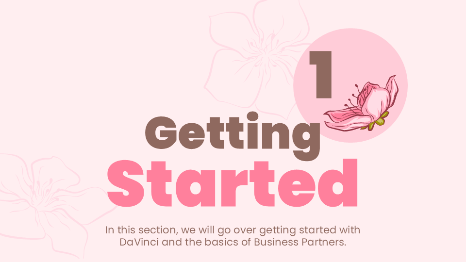

Lesson 1: Getting Started
 part 1 of 3
Logging In
To begin using DaVinci WMS:
- Open your web browser
- Navigate to the provided DaVinci WMS URL
- Enter your Username and Password when prompted

Exploring the Dashboard
After logging in, you’ll land on the DaVinci dashboard. This dashboard gives you a quick overview of key operational metrics, such as:
- Occupancy
- Inventory
- Other performance indicators
Take a moment to familiarize yourself with the layout. It’s designed to help you quickly monitor warehouse status.

The Navigation Menu
In the top-left corner, you’ll see the three-line menu icon (also known as the “hamburger menu”). This dropdown is essential for moving around the system.
From here, you can:
- Create new orders
- Edit existing records
- View various system features
Get familiar with this menu — you’ll use it constantly while working in DaVinci WMS.